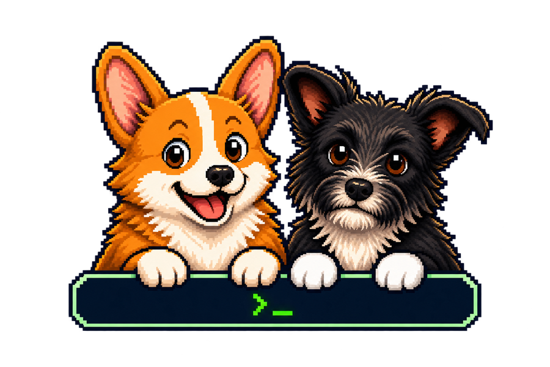

Cap: de una captura expuesta a root
Control de acceso, credenciales reutilizadas y privilegios de Python: las decisiones detrás de una escalada a root.
Pentester JuniorSantiago, Chile
Investigo fallos, conecto evidencias y documento decisiones. Explora mis casos y herramientas.
Proyecto propio · v0.28.0
Una revisión. Cuatro formatos.
Documenta hallazgos y evidencias en tu equipo. Genera PDF, Word, Markdown y HTML portátil desde la misma revisión, con comprobaciones antes de entregar.

report-genPDF · Word · Markdown · HTMLDos laboratorios HTB: problema, decisiones, evidencia y límites. Cada caso enlaza a la guía completa.
Control de acceso, credenciales reutilizadas y privilegios de Python: las decisiones detrás de una escalada a root.
Kerberos, grupos y ACLs: cómo una cuenta de servicio alcanza acceso como Administrator, según la guía.
Qué aporto en cada área y dónde puedes revisarlo. Cada ejemplo indica su contexto y sus límites.
Laboratorio HTB · Cap
Explico cómo un identificador expone una captura ajena y separo esa observación del acceso SSH posterior.
Retrospectiva documentada; no incluye el PCAP original ni un retest.
Laboratorio HTB · Forest
Relaciono identidad, membresías y permisos para explicar la cadena de acceso hasta DCSync y Pass-the-Hash.
Retrospectiva documentada; DCSync no acredita pertenencia a Domain Admins.
Proyecto propio · Python
Comparo una autorización vulnerable y otra corregida mediante código, escenarios y resultados que se pueden reproducir.
Datos sintéticos en memoria; la planificación se simula, sin un LLM real.
Proyecto propio · report-gen
Desarrollo un editor que conecta hallazgos, evidencias y remediación. Banco Lumbre muestra cómo organizo una entrega.
Banco Lumbre es una entidad ficticia; no representa un encargo de cliente.
Para explorar con calma
Guías, técnicas y herramientas para estudiar. Prometeo y Evaristo cuidan este rincón.
0:nmapelige un servicio para explorar
1:bloodhoundruta de Forest, guía 03
Resumen de 5 nodos. De una cuenta de servicio al acceso como Administrator: AS-REP roasting, WinRM, membresía anidada (MemberOf*), WriteDacl, DCSync y pass-the-hash.
2:report-gen0.28.0, informe de ejemplo
Hallazgos por severidad
0:nmap1:bloodhound2:report-genedición 10/10/2026
iphobiuss@lab:~/iphobiuss$ cat README.md
Guías con pistas, técnicas y herramientas para practicar. Cada carpeta tiene su propia dirección y puedes guardar tus lecturas en el cuaderno local.
Ahora Estudiando Ingeniería en Ciberseguridad (UNAB, egreso previsto en 2028). Explorando seguridad web, Active Directory e IA/LLM, y compartiendo lo aprendido en el laboratorio.
Junior penetration tester based in Santiago, Chile, focused on web exploitation, Active Directory and AI red teaming. OSCP+ holder with seven more certifications from Hack The Box and INE, all verifiable above. This site collects lab guides, techniques, tooling notes and report-gen, an open-source report editor. I read and write technical documentation and reports in English; spoken English is basic, so a technical interview in English is possible with some preparation.
Read the English overview, case summaries and project introduction →
iphobiuss@lab:~/iphobiuss/proyectos$ ls
Inicio local en Linux o Kali
Extrae el ZIP y abre la terminal en su carpeta report-gen/. El asistente prepara el entorno. Revisa primero los requisitos del README incluido.
cd report-gen
python3 start.py --ready
# editor en http://127.0.0.1:8080Consulta la guía para preparar Windows y el motor opcional Chromium, y revisar el alcance de validación por plataforma.
Del hallazgo a la entrega: organiza activos, evidencias y retests, y exporta PDF, Word, Markdown y HTML portátil desde una misma revisión guardada. Trabaja en tu equipo, sin cuentas ni telemetría.
En construcción
Agente de pentesting por línea de comandos para planificar evaluaciones autorizadas, organizar inventario y generar reportes verificables.
Sin descarga ni demo pública en este sitio.
iphobiuss@lab:~/iphobiuss/guias$ ls
Máquinas de Hack The Box explicadas con hipótesis, pruebas, pistas y conceptos transferibles. Empieza por la guía 00 si es tu primer laboratorio.
Los puntos de lectura requieren JavaScript. Las guías siguen disponibles.
Prepara Kali, conecta la VPN y aprende a interpretar lo que devuelve cada herramienta.
De un control de acceso incorrecto a credenciales FTP y una capability de Python.
Una cabecera revela una versión comprometida de PHP. El siguiente paso es entender por qué.
Primer recorrido por Active Directory: usuarios, Kerberos, relaciones de permisos y replicación.
Un backup expuesto conecta FTP, hashes, una aplicación web y PostgreSQL.
Usa la información pública de la web y sigue el rastro de las credenciales en Windows.
Una cadena de ocho eslabones que combina directorio, cifrado y objetos eliminados.
iphobiuss@lab:~/iphobiuss/tecnicas$ ls
Busca entre 52 técnicas, 36 herramientas y 7 guías, o entra por área. Las convenciones y el glosario están en Fundamentos.
Por certificación
iphobiuss@lab:~/iphobiuss/herramientas$ ls
Qué hace cada herramienta, cuándo usarla y comandos de referencia, agrupadas por propósito.
Contacto
Busco una oportunidad como Pentester Junior en Santiago. Puedes revisar mis proyectos y casos, y contactarme para conversar sobre mi trabajo.